Ride your .zwo workouts in ERG mode.
zwoTrainer controls your smart trainer second by second, turns folders of workouts into training plans and uploads every ride to Garmin Connect, Strava and Intervals.icu. There is no video, no subscription and no account.
Bluetooth FTMS trainers · heart-rate straps · Zwift Ride, Click and Play
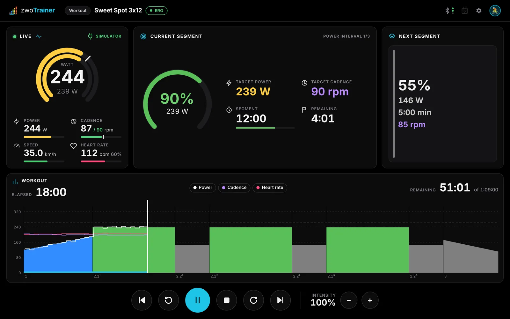
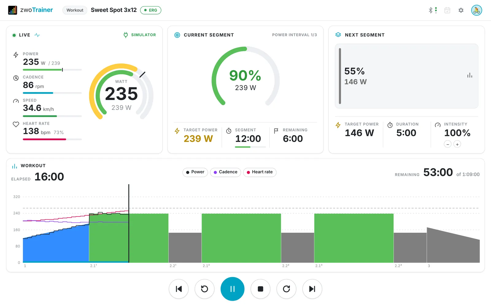
Plans, workouts and FTP tests.
The app opens on your next planned workout. The other two modes are one tab away.
A folder becomes a plan
Sort workouts into a folder by week and day, and zwoTrainer treats it as a plan. It tracks done and skipped sessions and always shows the next one.
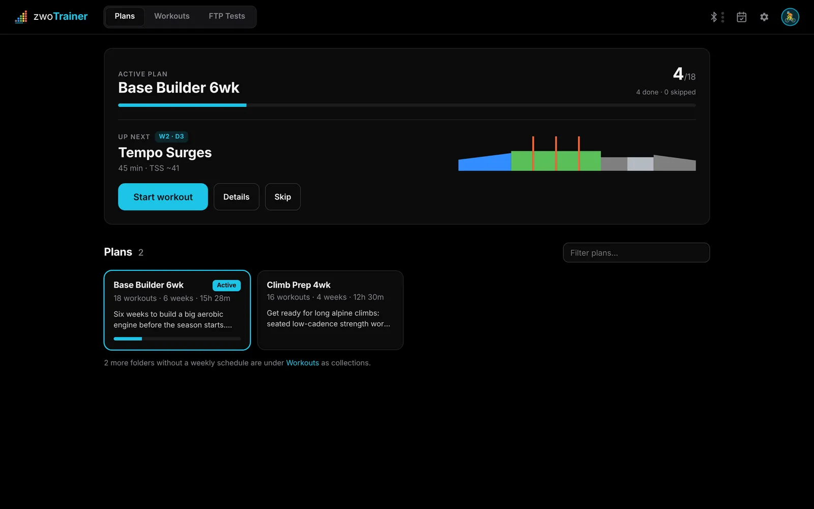
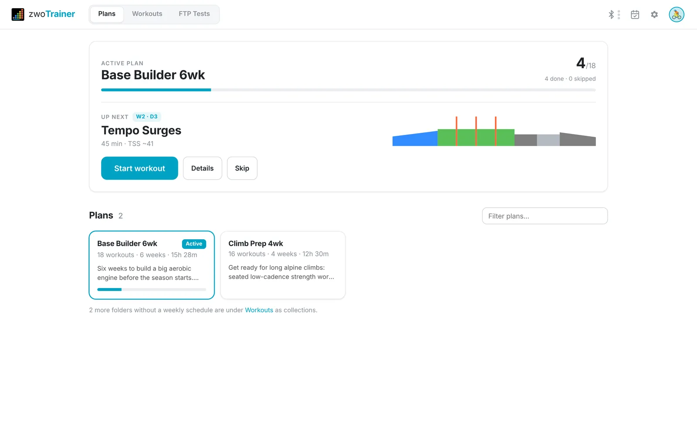
Your whole library
Search by name, filter by length and zone, sort by TSS and star favorites. Each row shows the workout's profile.
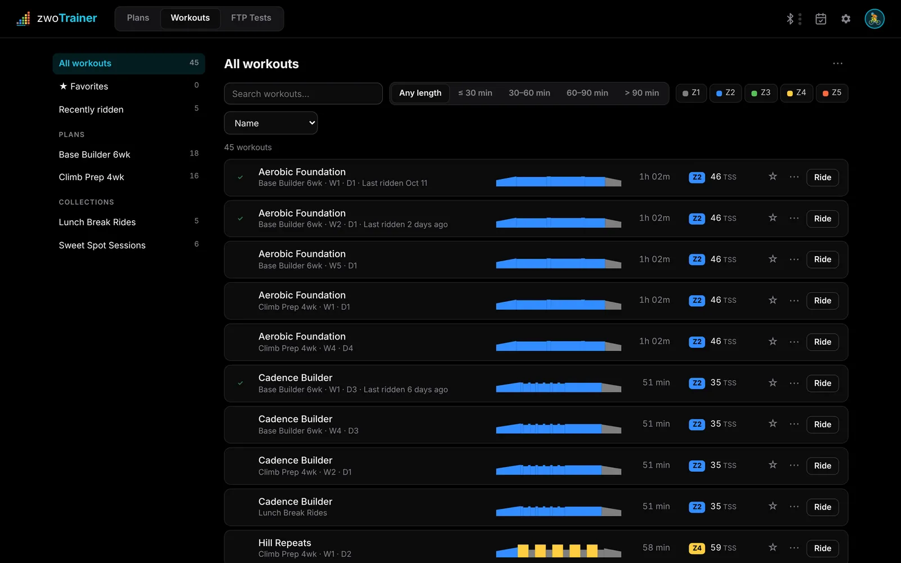
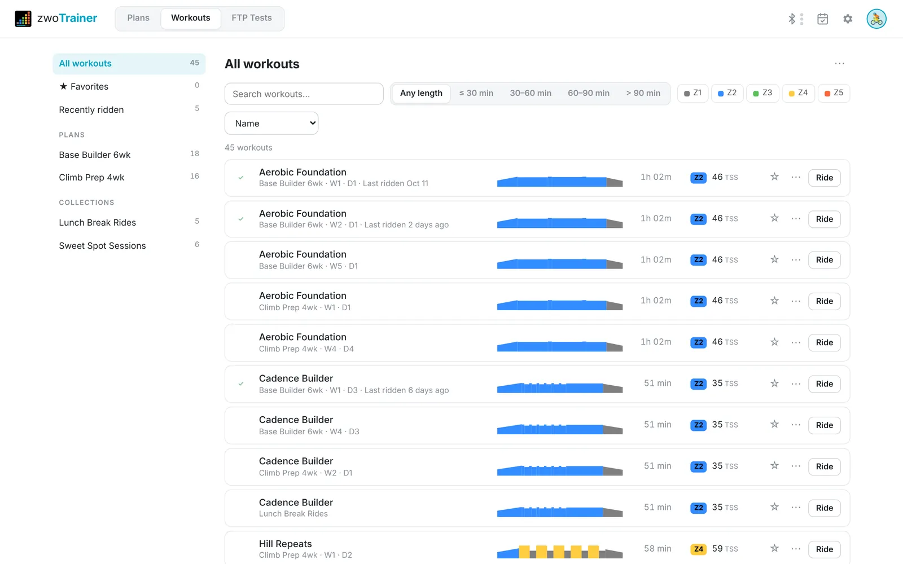
Know your FTP
Five built-in tests. Apply the result with one click and your zones update in watts.
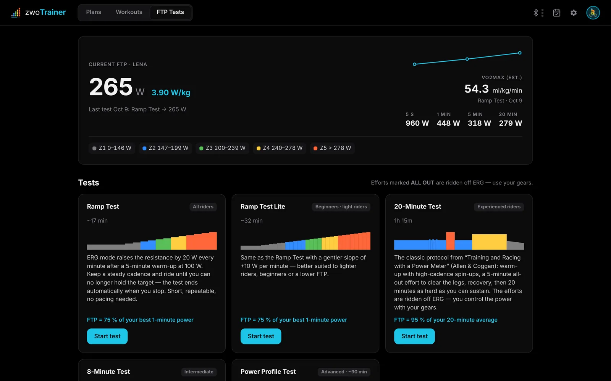
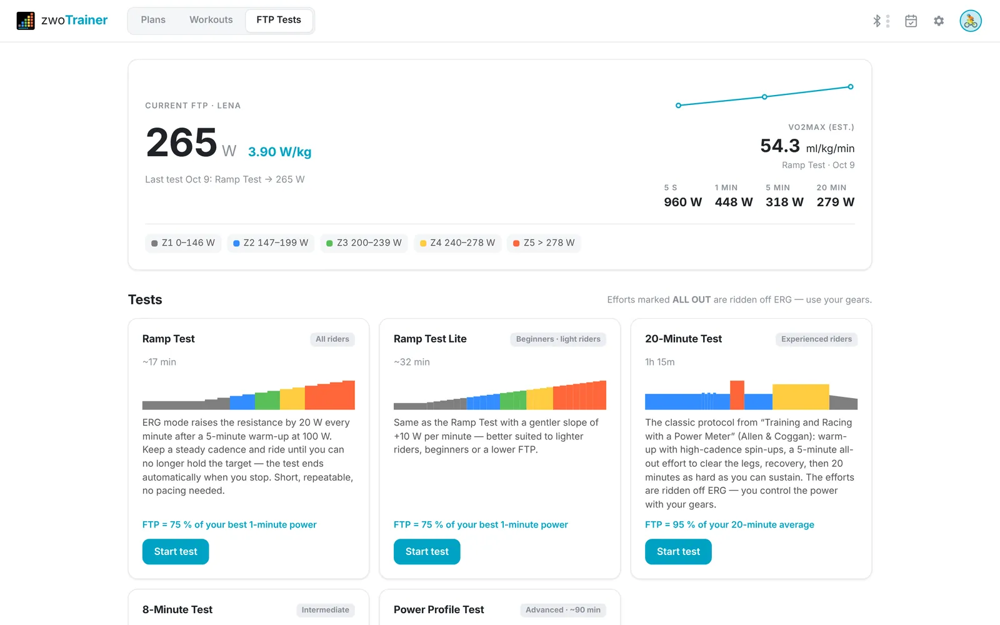
Readable in the middle of an interval.
Three panels sit above the workout chart. The numbers are large, the background is pure black or pure white, and the zone colours are the ones you know from Zwift.
- Live: a watt gauge with target and actual power, plus power, cadence against its target, speed and heart rate.
- Current and next segment: target in % and watts, target cadence, segment length and the time left.
- Workout chart: your power, cadence and heart rate drawn over the planned blocks.
- Intensity: scale all targets by 1 % next to the play button, from the keyboard or a Zwift controller, or by 10 % with Shift.
Light and dark mode follow your system, or pick one in Settings.
Open the app, press Start.
A folder of .zwo files sorted by week and day becomes a plan. Workouts unlock in order, skips can be undone, and a Markdown file in the folder is shown as the plan description.
- Progress is saved per plan, so you can switch plans and pick up where you left off.
- Every session shows week, day, duration, dominant zone and TSS.
- Stopped early? Save the ride as done, count it as skipped or discard it.
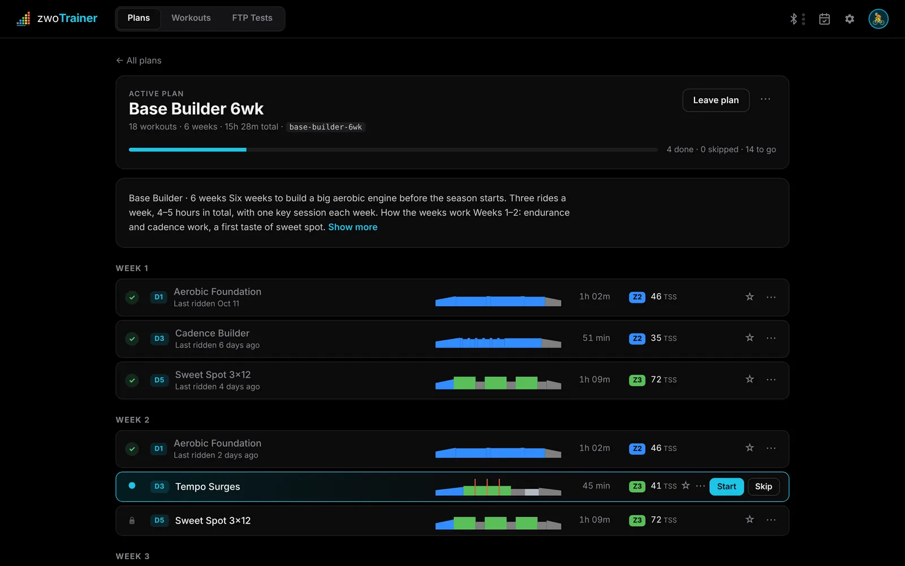
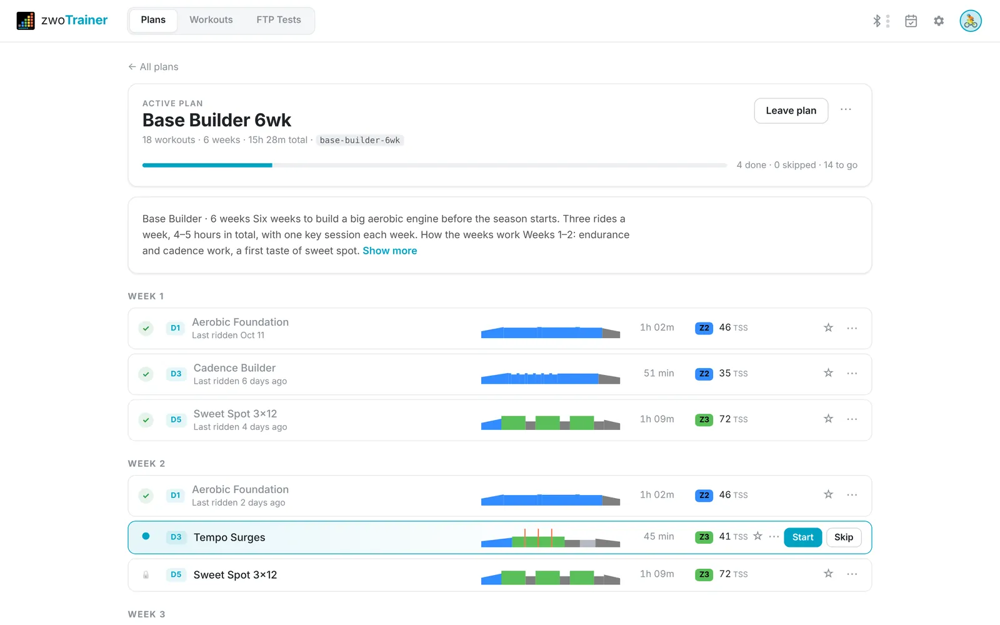
Live pacing during the test.
All-out efforts turn ERG off, and you control the power with your gears, real or virtual. In efforts of five minutes or longer you see your average so far. The 8- and 20-minute tests also show the FTP it works out to, and you get a warning if you ride more than 10 % above the pacing target.
- Ramp, Ramp Lite, 20-minute, 8-minute and Power Profile tests, plus test workouts from your library.
- Completed efforts only: an all-out effort stopped early gives no FTP, because it would come out too low.
- W/kg and VO2max estimates, a test history and an FTP trend chart.
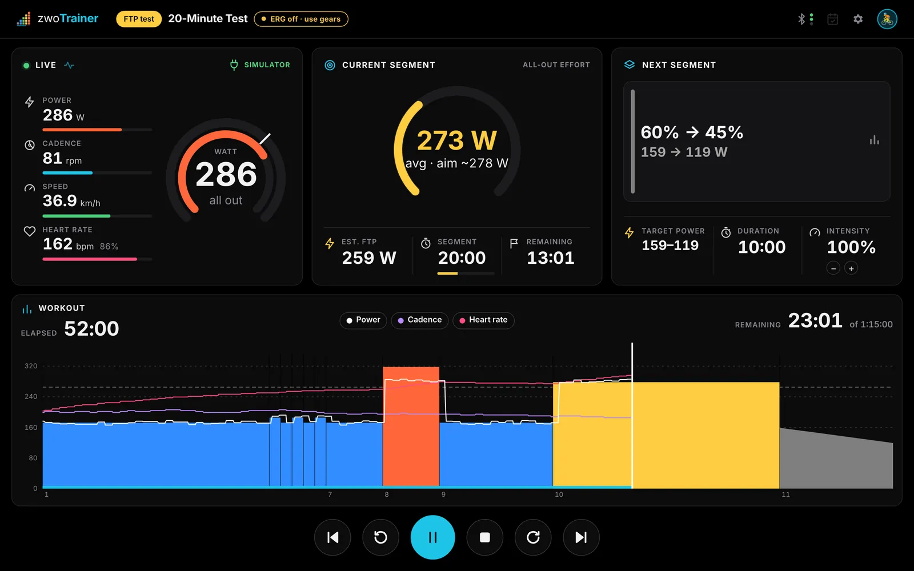
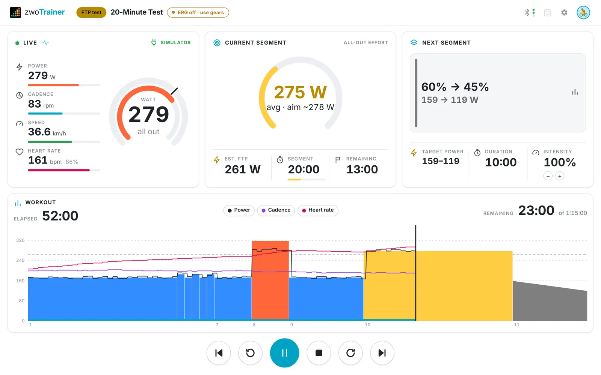
Uploads to Garmin, Strava and Intervals.icu.
Each ride is saved as a FIT file and uploaded to Garmin Connect under the workout's name instead of “Indoor Cycling”. If your Garmin account is linked to Strava, the ride continues there. Intervals.icu gets a direct upload, and for COROS the app prepares a file to import.
- Summary: time, average power, NP, average heart rate, cadence and energy.
- Garmin sign-in happens on Garmin's own page, with MFA. zwoTrainer stores a session token, never your password.
- Rider sync between computers through iCloud Drive, Dropbox or Nextcloud.
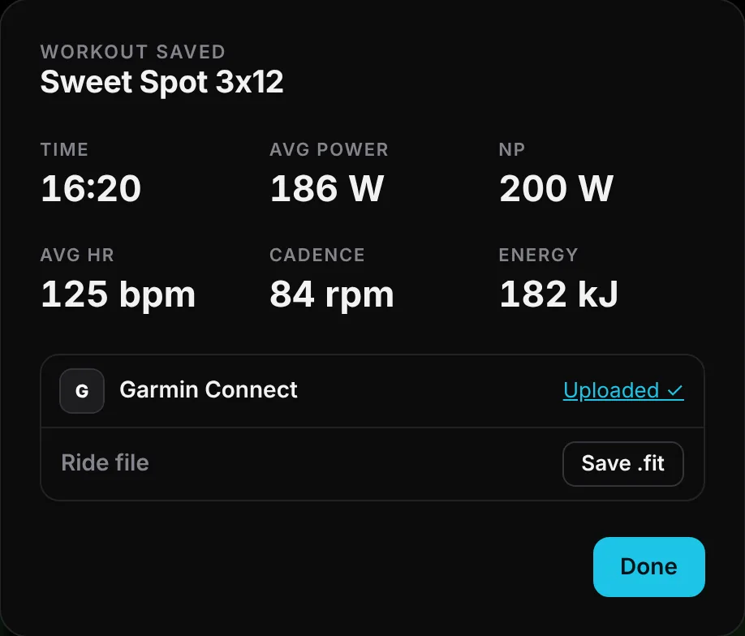
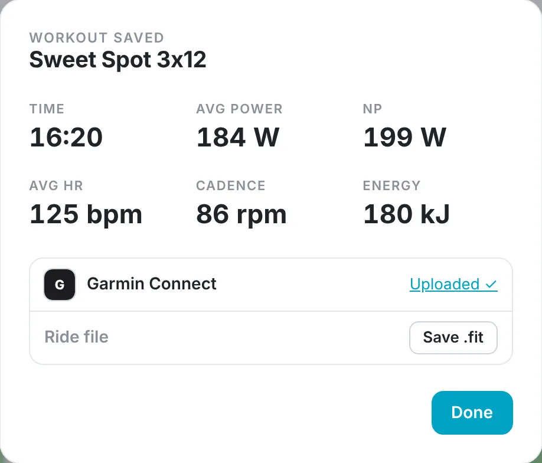
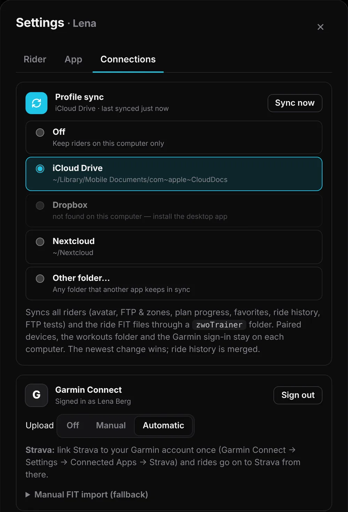
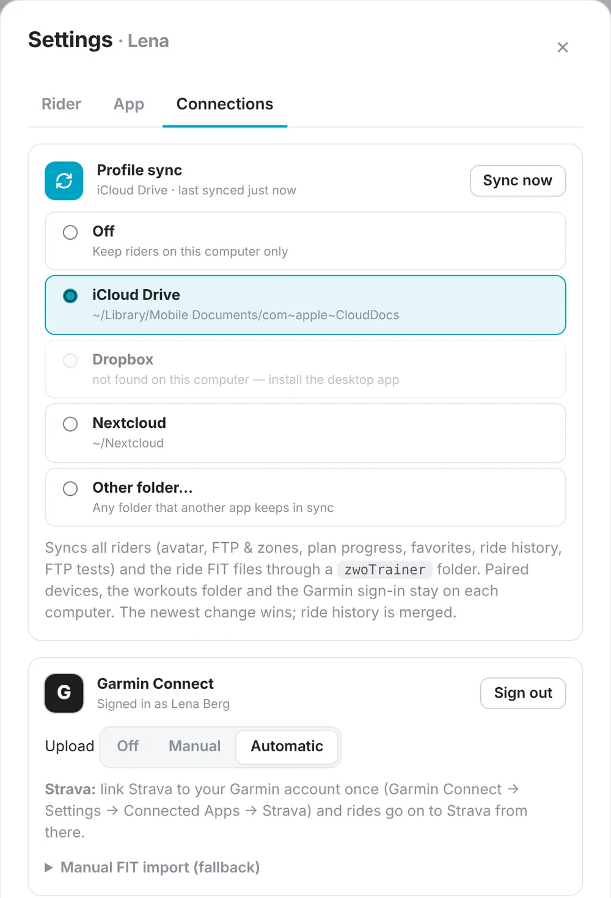
Pair once.
Devices are remembered per rider and reconnect at launch and after a dropout.
Smart trainers
Any Bluetooth FTMS trainer, such as Wahoo KICKR, Zwift Hub, Tacx, Elite, Saris or JetBlack, in ERG mode or flat-road simulation.
Power and heart rate
Bluetooth power meters (power only, no ERG) and any strap or watch that broadcasts heart rate.
Virtual shifting
24 virtual gears with road physics, shifted from a Zwift Ride, Click or Play controller, the keyboard or on-screen buttons.
Uploads
Garmin Connect (and Strava through it), Intervals.icu and COROS. A plain FIT file for anything else.
Like the app? Buy me a coffee.
zwoTrainer is free, has no ads and needs no account. If you use it for your training, a coffee helps me keep working on it.
Starring the repository or reporting a bug on GitHub helps too.
Get zwoTrainer.
Download the app, choose your workouts folder and pair your trainer.